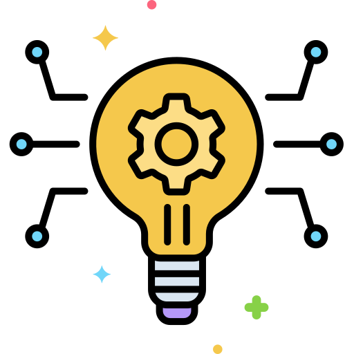

Bangladesh 2.0

Pillars of "Bangladesh 2.0"

Innovation
The process of introducing new ideas, technologies, and methods to solve problems and improve efficiency.
Sustainability
Meeting present needs without compromising the ability of future generations to meet theirs, balancing economic, social, and environmental factors.
Infrastructure
The foundational systems and structures (physical, digital, and social) required for society and the economy to function.
Empowerment
Enabling individuals and communities to take control of their lives and decisions
The Vision of Future
Bangladesh 2.0 aims to redefine the nation’s trajectory by embracing cutting-edge technology, promoting inclusive growth, and ensuring sustainability. With initiatives in renewable energy, digital transformation, and robust infrastructure, the country is set to become a global model of development.
Digital Transformation
Creating a nationwide digital ecosystem to enhance connectivity and access to services for all citizens.
Green Energy
Investments in solar and wind energy to ensure a sustainable and eco-friendly future.
Modern Infrastructure
Building state-of-the-art infrastructure to support economic growth and global competitiveness.
I dismiss personal profit and focus exclusively on people and planet. That's what I call social business: a nondividend company dedicated to solving human problems. You can go all the way, forgetting about personal profit, being single-minded about solving problems. The company makes profit, but profit stays with the company.
Dr. Muhammad Yunus
Chief Adviser of the People's Republic of Bangladesh
Recent News
Bangladesh 2.0 aims to redefine the nation’s trajectory by embracing cutting-edge technology, promoting inclusive growth, and ensuring sustainability. With initiatives in renewable energy, digital transformation, and robust infrastructure, the country is set to become a global model of development.

Bangladesh Launches New Satellite

Date: 05/01/2025
Time: 10.25 PM
Not until the creation and maintenance of decent conditions of life for all people are recognized and accepted as a common obligation of all people and all countries—not until then shall we, with a certain degree of justification, be able to speak of humankind as civilized
Bangladesh Launches New Satellite
Date: 05/01/2025
Time: 10.25 PM
Not until the creation and maintenance of decent conditions of life for all people are recognized and accepted as a common obligation of all people and all countries—not until then shall we, with a certain degree of justification, be able to speak of humankind as civilized
Bangladesh Launches New Satellite
Date: 05/01/2025
Time: 10.25 PM
Not until the creation and maintenance of decent conditions of life for all people are recognized and accepted as a common obligation of all people and all countries—not until then shall we, with a certain degree of justification, be able to speak of humankind as civilized